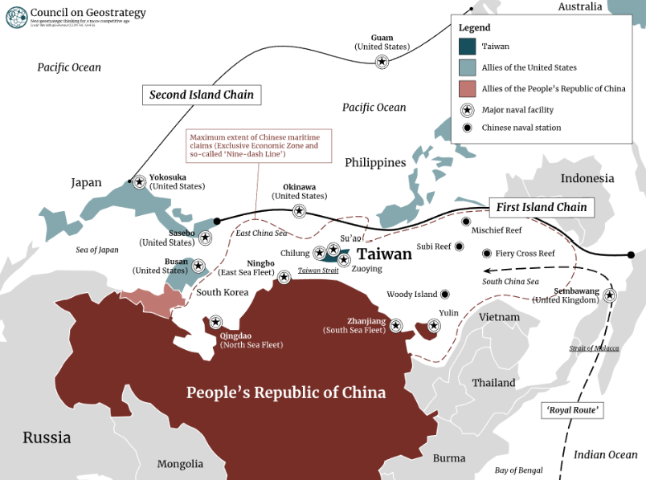
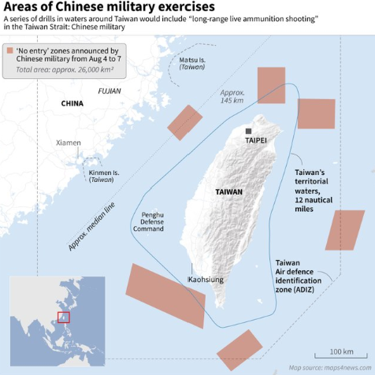
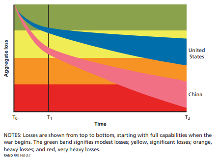
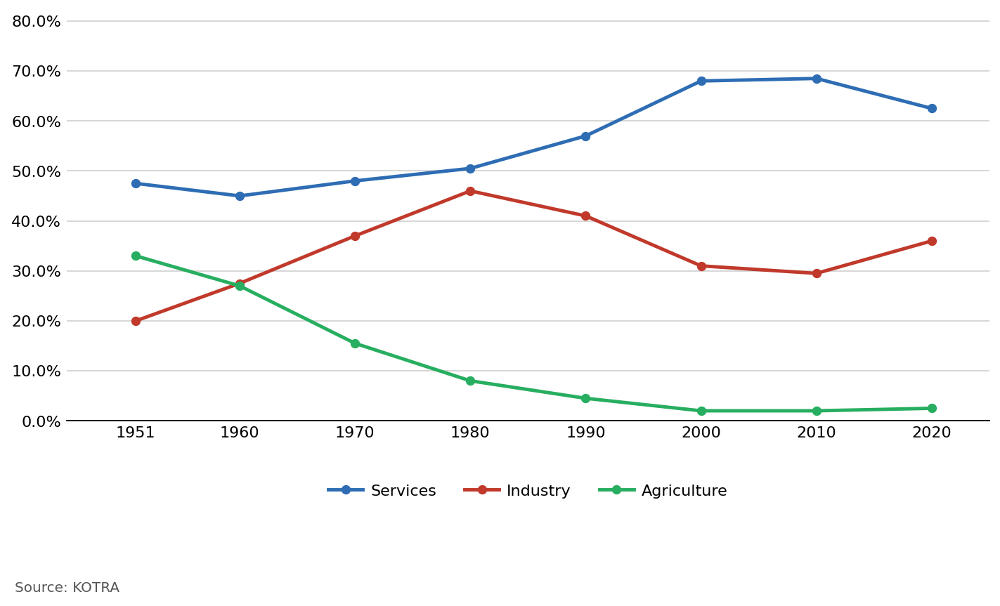

Executive Summary
- Driven by China's firm resolve to achieve unification with Taiwan in the near future—interlocked with U.S. security commitments to Taiwan—Taiwan has become the hotspot most likely to draw both powers into war.
- Speaker Pelosi's visit to Taiwan served three objectives: ▲(Personal) consolidating her political legacy in the fight for democracy and human rights; ▲(Party) creating a favorable electoral atmosphere for the Democratic Party ahead of midterms; ▲(US-China Competition) signaling U.S. commitment to Taiwan and dispelling doubts about American resolve on the island.
- The purpose of China's military demonstration was to secure the legitimacy of Xi Jinping's extended rule during the politically sensitive lead-up to the 20th Party Congress. The exercises also served to rehearse operational scenarios for a potential Taiwan blockade.
- China has significantly expanded its Anti-Access/Area Denial (A2/AD) capabilities, yet these remain fundamentally defensive. In an invasion aimed at unification, the military costs China would bear would exceed those of the United States.
- If conflict with U.S. forces occurred, the battlespace would encompass China's South and East China Seas, meaning China—more dependent on foreign trade—would face far greater economic opportunity costs from disrupted sea lanes.
- If China opts for invasion, it would most likely pursue a swift, decisive "blitzkrieg" strategy to neutralize Taiwanese resistance quickly. Whether an invasion actually occurs will ultimately be determined by U.S. and allied military strength and the cohesion of the international community.
- Despite the high costs, China regards unification as a historical mission. With dwindling tools to restrain Taiwan's pro-U.S. alignment, the possibility of a Chinese invasion of Taiwan cannot be categorically dismissed.
1
Cross-Strait Relations through the Lens of the 4th Taiwan Strait Crisis
1. Taiwan's Political and Security Landscape
1) The Framework of Cross-Strait Relations
- Within the structural context of U.S.-China strategic competition, Taiwan's strategic value has risen across three dimensions: geopolitical security importance, geo-economic importance tied to the semiconductor industry and supply chains, and significance as a symbol of democratic values and identity.
- In pursuing its Indo-Pacific strategy, the United States has leveraged Taiwan as a pressure point against China. Meanwhile, the DPP government of President Tsai Ing-wen has pursued a bandwagoning strategy with the U.S. to escape China's diplomatic isolation and communication freeze.
- The Xi Jinping administration—seeking to legitimize its extended rule—has shifted its Taiwan policy from passive prevention of independence to an active stance willing to employ non-peaceful means to achieve unification, intensifying military threats through gray zone tactics.
- This marks a reversal from Beijing's historically passive posture aimed merely at preventing formal separatism.
- The U.S. Council on Foreign Relations classified the Taiwan Strait as a "Tier 1" armed conflict risk zone in its 2021 and 2022 Preventive Priorities Survey reports.
- Analysts assess that in the event of armed conflict in the Taiwan Strait, the United States would struggle to suppress China decisively and could prevail only by committing more than 80% of its total military power—underscoring the paramount importance of deterrence.
2) The U.S. Stance
- As the military balance in the Taiwan Strait tilts toward China and Chinese military activity has sharply increased, debate has emerged in Washington over whether to shift from longstanding "strategic ambiguity" to "strategic clarity."
- For three decades, the United States has relied on strategic ambiguity to pursue "dual deterrence"—simultaneously discouraging ▲China's pursuit of non-peaceful unification and ▲Taiwan's declaration of legal independence. Since President Tsai Ing-wen's election in 2016, China's military pressure has steadily intensified as the cross-strait military balance has tilted.
- Questions have since arisen about whether strategic ambiguity can still prevent war, amid growing doubts about U.S. willingness to intervene and its military superiority in a Taiwan contingency.
- Some in Washington argue for transitioning to strategic clarity, which would ▲unambiguously signal U.S. military willingness to intervene to China, and ▲bolster Taiwan's own confidence and will to defend itself.
- Because such a transition offers limited practical gains, the Biden administration has instead pursued an "upgraded strategic ambiguity 2.0"—combining presidential affirmations of willingness to defend Taiwan with simultaneous State Department restatements of the unchanged One China policy, aiming to deter Chinese military provocation and prevent miscalculation.
- Supporting Taiwan's participation in international forums while maintaining opposition to formal independence.
- Given rising public support for U.S. military intervention in a Taiwan contingency, the Biden administration is likely to maintain a tough posture toward China ahead of the November midterm elections.
A 2021 report by The Chicago Council on Global Affairs found that 52% of respondents—including 60% of Republicans and 50% of Democrats—supported U.S. military intervention in a Taiwan contingency, a record high.
3) China's Stance
- Unlike the United States, which focuses on Taiwan's strategic value, China views Taiwan through the lens of historical mission—protecting territorial integrity from external encroachment and fulfilling the goal of national reunification. Unifying Taiwan, the last vestige of the "century of humiliation" (百年國恥), is understood as the realization of the Chinese nation's aspirations and the "great rejuvenation" that defines the Xi era.
- Taiwan also holds critical strategic value beyond historical imperatives. If China controlled Taiwan—positioned at the vanguard of the First Island Chain—it could project influence not only across the South China Sea but into the Western Pacific (Figure 1).

Source: Council on Geostrategy
Figure 1 — China's First and Second Island Chains
- If China absorbed Taiwan and its crown jewel TSMC, it could neutralize U.S. efforts to restructure the semiconductor supply chain.
- By securing advanced non-memory semiconductor technology and emerging as a dominant supply chain actor, China could render U.S. efforts to exclude it from the semiconductor ecosystem untenable to American allies.
2. Military Significance of the 4th Taiwan Strait Crisis
- In response to Speaker Pelosi's visit, China launched high-intensity military exercises, issuing a sweeping warning to pro-independence forces and publicly reaffirming its will to achieve unification.
- The exercises, which encircled Taiwan in a blockade formation, went well beyond a symbolic show of displeasure—they functioned as a live rehearsal of operational scenarios for a forcible military takeover of Taiwan.

Source: Reuters
Figure 2 — China's Taiwan Encirclement Military Exercises
- The positioning of China's Taiwan encirclement exercises (Figure 2) indicates an intent to intercept U.S. forces entering from Taiwan's southwest (South China Sea) and east (Western Pacific), while cutting off U.S. assets deploying from the Korean Peninsula and Japan to the northeast.
- Following the Taiwan exercises, China conducted live-fire drills in the Yellow Sea—interpreted as a counter to U.S. deterrence operations by USFK and USFJ, as well as a rehearsal for blocking U.S. reinforcements to Taiwan in a contingency.
- A U-2 reconnaissance aircraft was confirmed to have flown from Osan Air Base over the Taiwan Strait—carrying significant implications for South Korea as discussions about expanding USFK's regional role continue.
- This crisis vividly demonstrated that a Taiwan contingency could escalate into a broader Northeast Asian crisis, and that forcible unification remains a live option in China's strategic playbook.
2
Military Costs of Invading Taiwan
1. Military Costs: The Protracted War Scenario
- As U.S.-China tensions intensify, the United States has expanded support for Taiwan while nominally respecting the One China principle. China, suspicious of U.S. intentions, calculates that delay makes unification increasingly difficult.
- However, if China attempts to unify Taiwan by force, it would absorb considerable losses. Failing to conclude the invasion rapidly would render conflict with U.S. forces inevitable—potentially involving carrier strike groups and strategic assets based in Guam, the Philippines, Japan, and South Korea.
- A RAND Corporation report analyzing the losses a U.S.-China war would inflict on both sides modeled military capability degradation for each country based on China's A2/AD capabilities.

Source: Gompert et al. (2016). War with China: Thinking through the unthinkable. RAND Corporation.
Figure 4 — Projected Military Capability Losses in a US-China War
- In simulations using 2015 and 2025 as war-onset dates, U.S. military losses surge significantly in the 2025 scenario compared to 2015 (Figure 4). However, Chinese military losses are far greater than American losses—and the gap would be wider still, given that allied U.S. assets were excluded from the model.
2. Military Costs: The "Blitzkrieg" Scenario
- China aims to become the world's preeminent power—a "modern socialist state"—by 2049, the centennial of the People's Republic.
- The PLA has set a series of military modernization targets, including the capability to enter the Western Pacific, occupy Taiwan, and confront U.S. forces.
- An invasion of Taiwan would risk delaying these goals, and China lacks firm confidence it could actually secure the island. It would also face cascading effects: international censure, geopolitical constraints, and potential great-power military intervention.
- Nevertheless, if China could end the war as quickly as possible, the burdens of a military campaign could be minimized.
- China might pursue a "blitzkrieg" strategy—collapsing organized Taiwanese resistance and annihilating separatist forces in the shortest possible time to seize the entire island and force unconditional surrender.
2) PLA Military Capabilities for a Blitzkrieg
- The success of a blitzkrieg hinges on how effectively China can project power onto Taiwan and across the Taiwan Strait.
- The PLA is rapidly building the forces needed to occupy Taiwan but still falls short. Key deficiencies critical to a blitzkrieg include: ▲insufficient number of brigades; ▲inadequate joint operations and logistics capabilities; ▲insufficient forces to interdict U.S. support (narrow carrier battle group early-warning coverage, limited aerial refueling capacity, restricted maritime surveillance/tracking range).
- Taiwan's military holds notable advantages: early warning systems, joint strike capabilities against China's eastern coastline, and strong air defenses—overall, Taiwan's defensive posture is assessed as robust.
- China's capabilities are currently insufficient, but critical gaps are being filled rapidly. Once Beijing believes sufficient forces are in place, the possibility of choosing the military option cannot be ruled out.
3
Economic Costs of Invading Taiwan
1. Economic Costs of an Invasion
- The same RAND report concludes that China would also be far more economically vulnerable than the United States (Figure 5).

Source: Gompert et al. (2016). War with China: Thinking through the unthinkable. RAND Corporation.
Figure 5 — Projected Economic Losses in a US-China War (GDP %)
- China's higher dependence on foreign trade relative to the United States means that if fighting occurs in the Taiwan Strait and Western Pacific, disrupted sea lanes would severely impact China's regional and international trade.
- Aggregating trade volume decline, domestic consumption decline, and FDI inflow decline, the RAND model projects: U.S. GDP would fall 5–10%; China's GDP would fall 25–35%.
- In the event of an invasion, China cannot be confident of victory, and its expected losses are overwhelmingly larger than those the United States would bear.
- This does not simply imply U.S. superiority. By comparison, U.S. GDP contracted just −0.3% in 2008 and −2.4% in 2009 during the global financial crisis. A projected 5–10% decline would therefore represent an enormous burden for the United States as well.
2. The Effect of Economic Retaliation Against Taiwan
- With full-scale war against U.S. forces projecting massive losses and a rapid conquest of Taiwan proving difficult, China has resorted to economic retaliation—yet in doing so, China's own vulnerabilities have been exposed.
- Beginning August 3, China banned imports of certain citrus products (grapefruit, oranges), some seafood (chilled hairtail, mackerel), and certain processed foods from Taiwan. China also banned exports of natural sand to Taiwan, a material used in construction and as a semiconductor wafer substrate.
- The export-to-China dependency ratios—hairtail (100%), citrus (80%), frozen mackerel (50%)—reveal that China carefully selected high-impact items. However, Chinese natural sand accounts for only 2% of Taiwan's total sand imports.
- Notably, semiconductors and electronics—Taiwan's most critical economic sectors—were entirely excluded from sanctions. The excluded items represent over 80% of Taiwan's China-directed export value.
- China's economic retaliation has targeted a narrow range of agricultural products that constitute a negligible share of Taiwan's overall economy—amounting to largely symbolic sanctions (Figure 6).

Source: KOTRA
Figure 6 — Taiwan's Industrial Structure Trend (Unit: %)
- In the current climate—where U.S.-China tensions and China's zero-COVID policy have reduced China's investment attractiveness—sanctioning Taiwan's core electronics and machinery industries could accelerate Taiwanese firms' capital flight from China, imposing heavy costs on Beijing as well.
- Taiwan's greatest vulnerability is TSMC, the heart of its semiconductor industry. Yet since TSMC's products account for over 30% of China's semiconductor imports, Taiwan's Achilles' heel is equally China's Achilles' heel.
- TSMC announced in 2021 the expansion of its automotive chip plant in Nanjing, China—but using only 28nm process technology, not sub-10nm advanced nodes.
- This is a deliberate strategy: providing enough access to sustain economic interdependence while withholding core technology to prevent over-dependence on China—preserving leverage in cross-strait relations.
- For China, which urgently needs semiconductor technology, economic coercion is functioning as a centrifugal force pushing Taiwan closer to the United States—the opposite of the centripetal force needed to draw Taiwan toward Beijing.
- As semiconductors become strategic assets, Taiwan is in a position to exercise leverage over China. TSMC is also pursuing construction of 20 new semiconductor facilities in Taiwan, including at Tainan.
- Beyond resolving the 2021 chip shortage, this ensures that if Taiwan were attacked, the world could not remain a passive observer.
- China—needing leverage to pressure Taiwan away from the "One China" framework—finds itself constrained to symbolic sanctions by Taiwan's own technological strength. The harder China pushes coercive measures, the more it loses initiative in cross-strait relations.
4
Outlook for the Taiwan Strait Crisis and Implications for the Korean Peninsula
1. Outlook for the Taiwan Strait Crisis
- Experts across countries point to several potential windows for armed conflict: 2027 (the PLA's centennial and the final year of Xi Jinping's third term); 2028–2030 (when China's GDP is projected to surpass that of the United States); and around 2049 (the centennial of the People's Republic).
- What matters more than specific dates is how the following variables evolve: the U.S.-China military gap, China's technological rise, and U.S. resolve to defend Taiwan.
- (Military Gap) China seeks to achieve defense modernization—including the capability to match U.S. forces in the Western Pacific—by 2035, and to compete globally by 2050.
- With China already assessed to have acquired initial invasion capabilities, its A2/AD capacity and near-seas operational capabilities will continue to grow over time.
- (Technology Gap) China's biggest weakness remains semiconductor technology. SMIC (Semiconductor Manufacturing International Corporation)—China's "TSMC equivalent"—is growing rapidly, but China's major firms still heavily depend on TSMC for advanced mobile SoCs and sub-10nm processes.
- Deep dependence on Taiwanese firms for semiconductors indispensable for future technologies serves as a deterrent against Chinese military action.
- However, if China's semiconductor industry matures and becomes a dominant hub for supply and consumption, a leverage reversal between China and Taiwan is possible.
- (U.S. Resolve to Defend Taiwan) Deterrence failure in the Taiwan Strait is most likely to originate from Chinese leaders misreading U.S. capabilities and intentions.
- China could conclude that: the uncertainty of a direct military confrontation with the U.S. is manageable; economic damage to China would be limited; and the likelihood of a coalition forming to contain a war-initiating China is low.
- While Taiwan is an important U.S. partner, if domestic political pressures lead China to miscalculate that U.S. resolve and capacity to defend Taiwan are lacking, the probability of an invasion rises sharply.
2. Implications for the Korean Peninsula
1) South Korea's Risk of Entanglement in a Taiwan Strait Crisis
"USFK is in a position to provide the Indo-Pacific Commander with a range of options in addressing offshore contingencies and regional threats. I will advocate for including USFK capabilities in Indo-Pacific Command contingency and operational plans."
— General Paul Joseph LaCamera, Commander, U.S. Forces Korea (U.S. Senate Armed Services Committee Confirmation Hearing)
- USFK is simultaneously a component of U.S. military power and a force stationed in South Korea. If USFK becomes involved in a U.S.-China military clash, South Korea could be drawn into the conflict.
- Deploying USFK forces beyond the Korean Peninsula at U.S. discretion is known as "strategic flexibility"—this was a major point of contention in U.S.-ROK relations during the Roh Moo-hyun administration.
- That controversy was broadly resolved with the understanding that "USFK will not, contrary to the will of the Korean people, be involved in regional conflicts in Northeast Asia," but interpretations diverge.
- President Roh stated: "USFK cannot be mobilized without ROK government consent." The Bush administration countered: "How U.S. forces are used is a matter of U.S. sovereign authority."
- If USFK and USFJ become involved in armed conflict in the Taiwan Strait, China would regard South Korea and Japan as adversaries—and complications would deepen further if North Korean factors enter the equation.
- Furthermore, in the event of conflict in this region, South Korea and Japan—which import virtually all their energy by sea—would face sharply higher maritime logistics costs, with severe negative impacts on both economies and on foreign investor sentiment across East Asia.
2) South Korea's Response and Assessment
- South Korea's hedging strategy aims to balance economic and security interests simultaneously—but several important caveats apply.
- First, simply maintaining strategic ambiguity risks degrading South Korea's standing within the U.S. alliance and Indo-Pacific partnerships. South Korea must proactively articulate a clear position.
- Second, in a Taiwan contingency, South Korea would face unavoidable pressure to provide at minimum some logistical support. The critical variables will be how forcefully Washington makes that demand and how far the United States pushes its strategic requirements.
- The Biden administration is pressing China hard on human rights, democracy, the South China Sea, the East China Sea, and Taiwan—yet a complete U.S.-China decoupling over the long term remains improbable. Driving the Taiwan issue toward catastrophic conflict does not serve either side's interests; ultimately, deterrence of war must remain the central objective of U.S. policy.
- Accordingly, South Korea should make it clear at every international opportunity that peace and stability in the Taiwan Strait is a vital South Korean national interest. At the governmental level, South Korea should coordinate Taiwan contingency scenarios through strategic dialogue with the United States.
- The Taiwan dispute is not a simple regional conflict—it can constrain the strategic decision-making space of South Korean firms operating in China. South Korea should factor in the likelihood that the United States will continue to press the Taiwan issue to discourage Korean bandwagoning toward China, and calibrate its China market entry strategy accordingly.